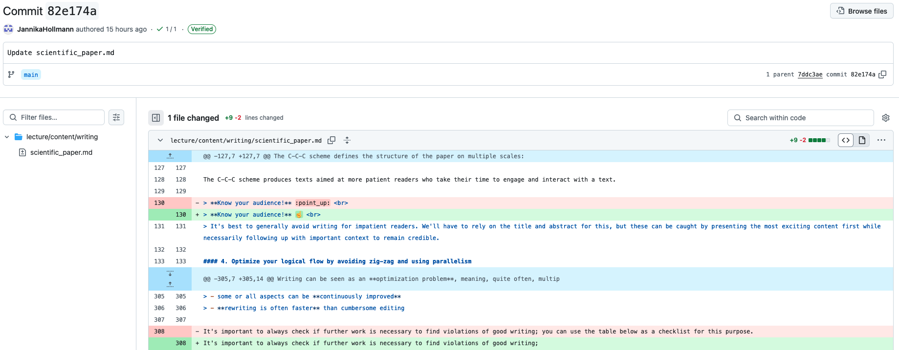

Why Use Jupyter Book?#
Among the various tools available for creating OERs, why is our approach based on Jupyter Book?
Great question!
Jupyter Book is a powerful and flexible tool for creating open and interactive educational content. It is an open source tool that has been developed by the Project Jupyter, a non-profit and open-source project that aimed to support interactive data science. However, Jupyter Book is agnostic and can be used for any type of content.
Below are some key reasons to consider using Jupyter Book for your next project:
1. Easy formatting
Text can be easily formatted in Markdown files (text), and code can be written in Jupyter notebooks.
Here are some formatting basics:
Use hashtags
#before your heading to create various levels of headings:
# Heading 1
## Heading 1.1
### Heading 1.1.1
Add a
*before and after a word to make your text italic and add**to make it bold
*italic*–> italic
**bold**–> boldBuild (nested) lists by using either
*or-before a list item
* item 1
* item 2
- item a
- item b
- item 3
to create such a list:
item 1
item 2
item a
item b
item 3
2. Multimedia integration
Integrate visualizations, audio, videos, live code, equations, citations, cross-references and text seamlessly into a single document to create an engaging learning experience.
Image/Gif integration üñºÔ∏è
Audio integration üéß
Video integration üì∫
Integration of presentations
3. Collaboration and sharing
Collaborate and share easily, thanks to its open-source nature and GitHub integration.
Here, I have added my colleague to the project:
Now, both of us can track all changes (called commits) made to the project:
By inspecting a specific commit, we can review the exact changes that were applied:

4. Interactive elements
Enhance exercises and quizzes with interactive elements such as sliders and dropdowns.
When you read this, you already opened a dropdown, that can be used for tips, hints, spoilers, warnings, etc.
5. Accessibility
Make your materials accessible across platforms with multiple export formats (HTML, PDF, EPUB). This also allows you to easily cite your course website in your CV or on your personal website.
You can download this page by clicking on the download button on the upper right side.
5. Strong community and support
Rely on a strong community and extensive support, as Jupyter Book builds on the widely used Jupyter Notebook ecosystem.
Here are, e.g., the community forum and a freely accessible documentation.
By leveraging Jupyter Books, educators can create dynamic, reusable, and interactive learning experiences that not only meet modern teaching and research needs but also align more effectively with the principles of open science and FAIR research than conventional approaches.
Let’s take a look!
Please browse the gallery of Jupyter Books created by the community and choose one example to explore:
What didactic challenges does it address?
What elements have been integrated?
Which features might be useful or inspiring for your own teaching?
Take about 10 minutes for this activity. We will then discuss your impressions together.
Note
I know, some of these examples look really polished and complex! But don’t worry. On the next page, you’ll find information about our framework and the easy-to-adapt template that will make creating your own course website really simple.